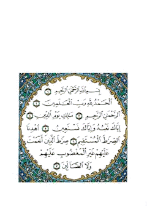

Nel nome di Dio Clemente e Misericordioso

Nel Corano Allah S.T. ci narra con precisione la missione dei Profeti e ci invita a riflettere per capire come erano da Lui scelti e successivamente assistiti nelle loro missioni e a trarre da ciò l’esempio migliore da imitare. Quindi anche la figura di Maria madre di Gesù occupa una grande parte nel Corano ed è dedicato a lei un intero capitolo proprio intitolato “Maryam” il XIX. E’ l’unica donna che Allah nomina nel Corano col proprio nome e per ben 34 volte di cui 24 volte è associato al nome di Gesù mentre per le altre donne queste vengono nominate mogli dei Profeti. (moglie di Lot, moglie di Mosè). Comincerei a parlare della sua nascita che viene descritta nel III capitolo del Corano “la famiglia di Imran” diretti discendenti della famiglia di Mosè. Nell’espressione coranica il lettore è coinvolto in una espressione diretta che avviene fra Allah e in questo caso la madre di Maria. Nel capitolo III de “la famiglia di Imran” vs. 35 leggiamo: “Quando la moglie di Imran disse: “mio Signore ho consacrato a Te e solo a Te quello che è nel mio ventre. Accettalo da parte mia. In verità Tu sei Colui che tutto ascolta e conosce!”. Quindi vediamo come già Dio ricompensa la devozione di questa donna timorata donandole una figlia che lei consacrerà a Dio stesso interrompendo l’usanza comune del consacrare al tempio solo i figli maschi e non le femmine. Vs. 36 “Poi, dopo aver partorito disse: “Mio Signore, ecco che ho partorito una femmina”, ma Allah sapeva meglio di lei quello che aveva partorito, “il maschio non è certo simile alla femmina! L’ho chiamata Maria e pongo lei e la sua discendenza sotto la Tua protezione contro satana il lapidato”.
Quindi nacque Maryam. Vs. 37 “E il Suo Signore l’accolse di accoglienza bella, e la fece crescere della migliore crescita. L’affidò a Zaccaria e ogni volta che egli entrava nel santuario trovava cibo presso di lei. Disse: “Oh Maria, da dove proviene questo?”. Disse: “da parte di Allah”. In verità Allah dà a chi vuole senza contare”. Per quel che riguarda l’affidamento a Zaccaria in particolare quindi su come sia caduta la scelta su di lui fra tanti notabili che ambivano a questo privilegio c’è un episodio narrato che ci dice che i vari notabili gettarono i loro calami nel fiume Giordano e fra tutti l’unico che rimase a galla fu quello di Zaccaria. Fu così che Maryam gli venne affidata. Cresce nel tempio, lontana dalla famiglia. Già da molto tempo Zaccaria assisteva a fatti insoliti e miracolosi che riguardavano Maria e che culminano con l’Annunciazione. Successivamente si legge nel vs. 42/43/44 : “E quando gli angeli dissero: “in verità, oh Maria, Allah ti ha eletta; ti ha purificata ed eletta tra tutte le donne del mondo”. L’elevazione di Maria è ben distinta e il paragone è alquanto enorme, c’è Maria e poi ci sono tutte le altre donne del creato. La dignità di Maria è suprema. Nel mondo femminile nessuna donna può competere in dignità con lei, la madre di Gesù. Maria è modello di fede postulato essenziale per il musulmano che esprime l’adesione assoluta alla volontà divina e sottomissione al sovrano potere di Dio, dono incondizionato di sé, consegna totale della persona. Nella sura 66 vs. 12 si legge: “E Dio propone ad esempio per coloro che credono la moglie del faraone…e Maria, figlia di Imran, che conservò la sua verginità; insufflammo in lei del nostro spirito. Attestò la veridicità delle parole del suo Signore e dei Suoi libri e fu una delle devote”. A questo proposito esiste un detto del Profeta SS che disse che Maria insieme a Fatima e Khadijia e Assiya (moglie del faraone) è una delle signore del paradiso. Con l’espressione “ti ha purificata” Allah S.T. nel Corano dà un significato profondo alla sua figura per le successive accuse che subirà in seguito alla nascita di un figlio senza padre. “Oh Maria, sii devota al tuo Signore, prosternati e inchinati con coloro che si inchinano”. Anche la migliore, quindi fra tutte le donne si inchina in preghiera e si prosterna davanti ad Allah come d’altronde tutto il creato. Maria ha corrisposto pienamente all’amore gratuito di Dio mostrandosi ovunque osservante della religiosità attraverso la preghiera accompagnata da prostrazioni, digiuno manifestazioni da vera musulmana. Essa onora con una santa condotta l’unico vero Dio e sa accogliere con amore quanto Dio vuole operare in lei. Vs. 44 “Ti riveliamo cose del mondo invisibile perché tu non eri con loro quando gettarono i loro calami per stabilire chi dovesse avere la custodia di Maria e non eri presente quando disputavano tra loro”. In questo versetto Allah S.T. svela al Profeta vicende che mai erano state menzionate nei libri da Lui rivelati precedentemente proprio per far capire l’autenticità delle sue parole. L’annunciazione avviene tramite l’arcangelo Gabriele e l’obiettivo non è solo rivelare la verginità di Maria, ma anche il prodigio dell’atto di Dio cioè la nascita di un figlio senza padre. In due diversi capitoli avviene la narrazione di questo evento. Vs. 45 “la famiglia di Imran” “Quando gli angeli dissero: Oh Maria Allah ti annuncia la lieta novella di una parola da Lui proveniente, il suo nome è Messia, Gesù figlio di Maria, eminente in questo mondo e nell’altro, uno dei più vicini. Dalla culla parlerà alle genti e nella sua età adulta sarà tra gli uomini devoti”. Già dall’annunciazione sappiamo importanti caratteristiche del figlio di Maria. Il suo nome, la sua discendenza da una famiglia di timorati e la sua vicinanza al Creatore. Sullo stesso argomento nel Vs. 16 sura di “Maryam” si legge: “Ricorda Maria nel libro, quando si allontanò dalla sua famiglia, in un luogo d’oriente. Tese una cortina fra sé e gli altri. Le inviammo il nostro spirito che assunse le sembianze di un uomo perfetto. Disse Maria : “Mi rifugio contro di te presso il Compassionevole, se sei di Lui timorato!”. Rispose: “non sono altro che un messaggero del tuo Signore, per darti un figlio puro”. Disse: “Come potrei avere un figlio, che mai un uomo mi ha toccato e non sono certo una libertina?”. Rispose: “E’ così il tuo Signore ha detto: Ciò è facile per me…Faremo di lui un segno per le genti e una misericordia da parte Nostra. E’ cosa stabilita”. In modo così semplice ma al contempo così esplicito e diretto ci fa capire l’onnipotenza divina della creazione in questo caso senza padre ma anche come avvenne all’inizio cosa ancora più miracolosa la creazione di Adamo, senza né padre né madre. Al momento del parto Maria si trova sola. Vs. 22/34 “Maryam” “lo concepì e in quello stato, si ritirò in un luogo lontano. I dolori del parto la condussero presso il tronco di una palma. Diceva: “Me disgraziata fossi morta prima di ciò e fossi già del tutto dimenticata”. Fu chiamata da sotto: “non ti affliggere, che certo il tuo Signore ha posto un ruscello ai tuoi piedi, scuoti il tronco della palma: lascerà cadere su di te datteri freschi e maturi. Mangia, bevi e rinfrancati. Nella solitudine del parto Maria è comunque confortata da Dio che pur offrendole cibo e acqua le chiede ancora un ulteriore sforzo nel procurarsi questi frutti dell’albero sotto cui si trova. E’ questo un atto di volontà che la rende partecipe a questo sforzo personale quasi a dissipare il dolore del parto ma in realtà tutto ciò svanisce davanti alla potenza divina in suo favore. “Se poi incontrerai qualcuno di: “ho fatto un voto al Compassionevole oggi non parlerò a nessuno”. Tornò dai suoi portando il bambino. Dissero: oh Maria hai commesso un abominio! Oh sorella di Aronne, Tuo padre non era un empio né tua madre una libertina”. Maria indicò loro il bambino. Dissero: come potremmo parlare con un infante nella culla. Ma Gesù disse: “in verità sono un servo di Allah. Mi ha dato la scrittura e ha fatto di me un Profeta. Mi ha benedetto ovunque sia e mi ha imposto la salat e la zakat finchè avrò vita, e la bonta verso colei che mi ha generato. Non mi ha fatto né violento né disobbediente. Pace su di me nel giorno in cui sono nato, nel giorno in cui morrò e nel giorno in cui sarò resuscitato a nuova vita”. Questo è Gesù, figlio di Maria, parola di verità della quale essi dubitano”. Dopo la natività, l’avvenimento più importante della vita di Maria è la testimonianza che Gesù bambino, dalla culla rende miracolosamente l’innocenza della madre. E’ lui stesso a confutare l’accusa di fornicazione e maternità illegittima rivolta dai parenti a Maria quando torna a casa dopo il parto. Il Corano sottolinea di proposito, che Dio colma della sua pace il bambino e sua madre, che egli ha fatto dolci, l’uno e l’altra, mentre maledice i giudei “perché hanno proferito una calunnia nei confronti di Maria”. Noi musulmani affermiamo l’unicità di Dio e condanniamo chi osi attribuirGli soci; poiché Dio non ha né moglie né figli. Dio è purissimo ed è Uno e Unico. Ciò significa, che Gesù anche se nato in modo miracoloso è semplicemente un uomo e che Maria è madre di Gesù e non di Dio. Il posto che Maria occupa nel Corano e che Dio ha riservato a lei è segno di una particolare stima, ammirazione e venerazione: Dio assegna a Maria un doppio compito: quello di essere un segno ed esempio per i credenti. Possiamo quindi considerare Maria come una figura che illumina e sostiene e unisce cristiani e musulmani. Il suo cuore materno non può che aiutarci ad amare il medesimo vero Dio che adoriamo e ad amarci gli uni e gli altri come veri fratelli. E Dio ne sa di più.
ASSALAMALEIKOMRAHMATULLAHUABARAKATUHU.